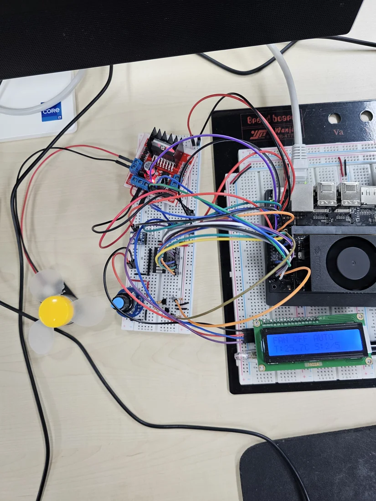
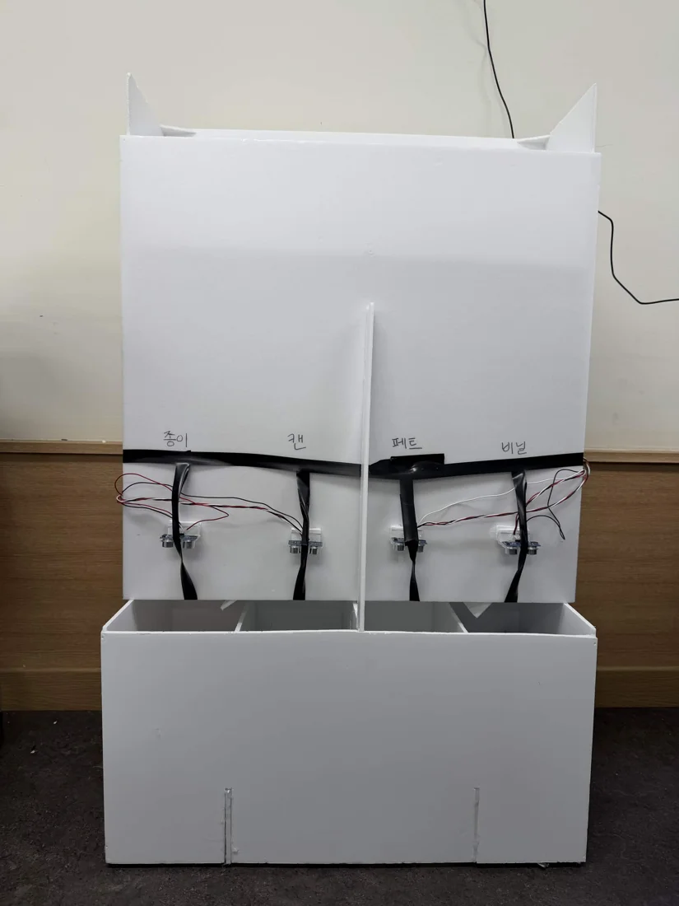
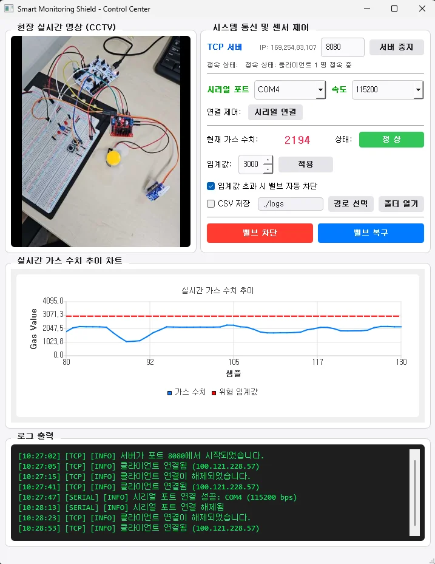
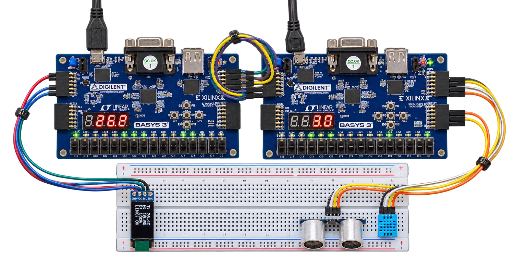
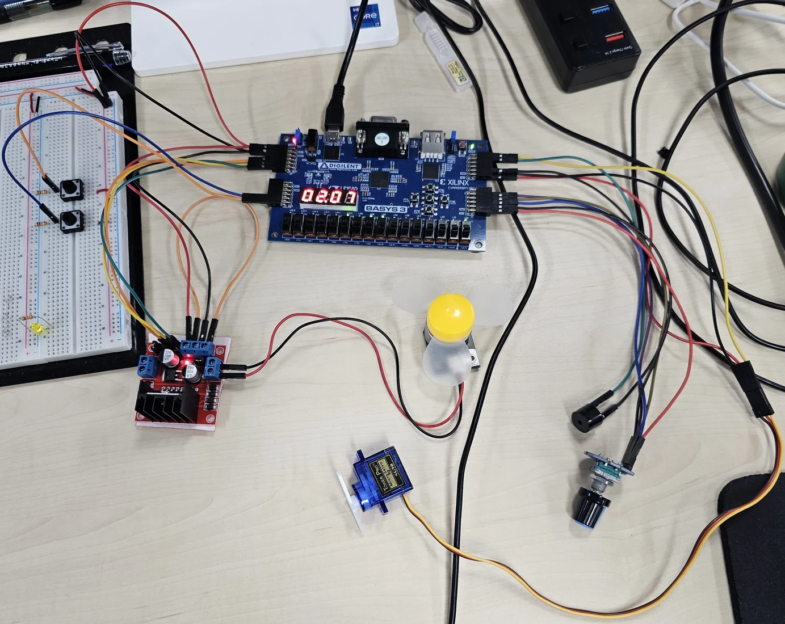
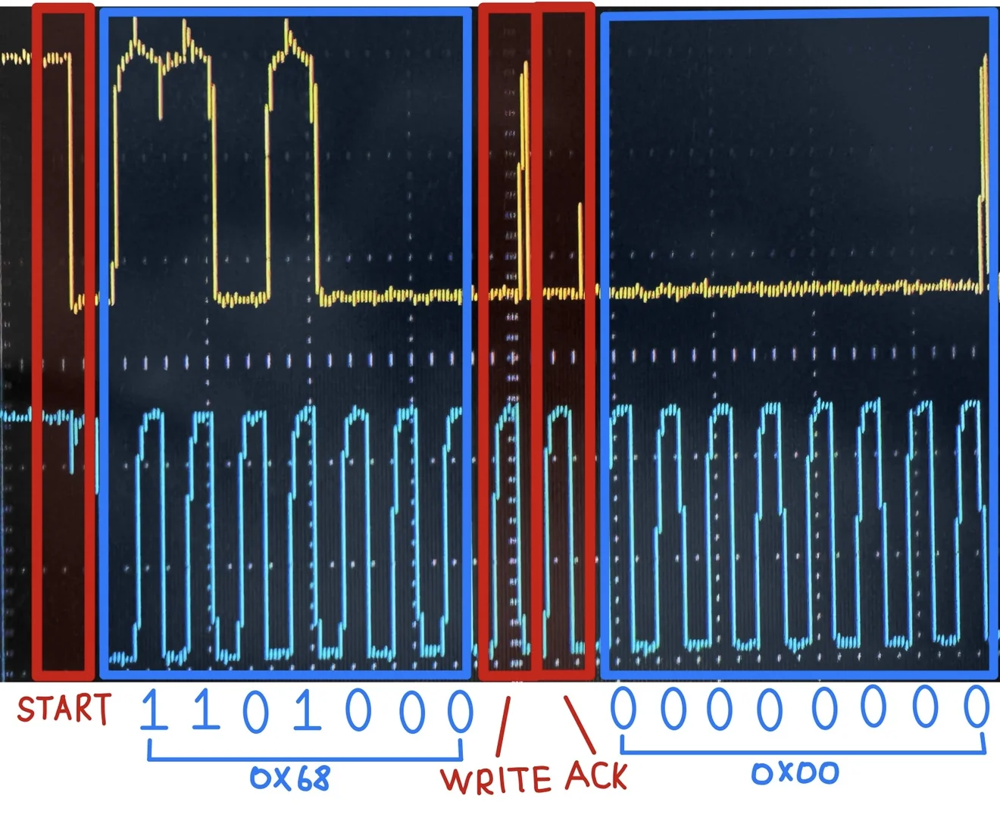
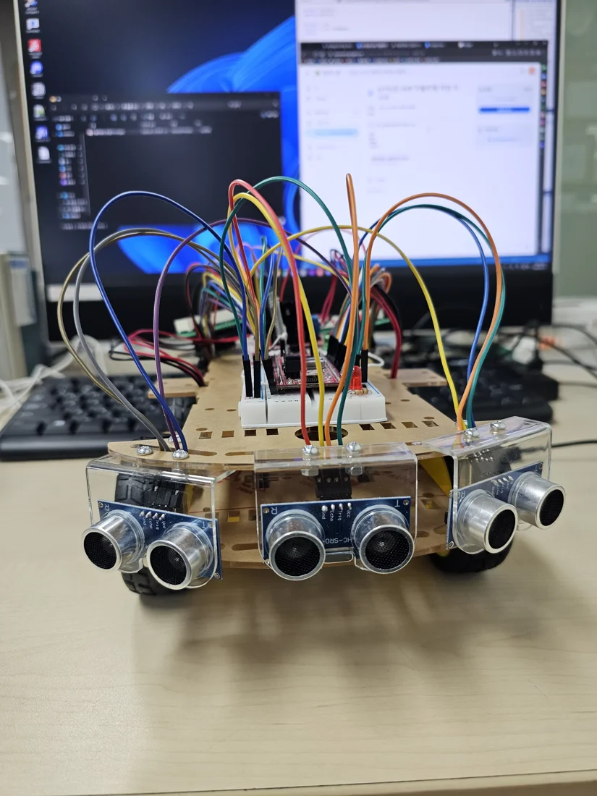
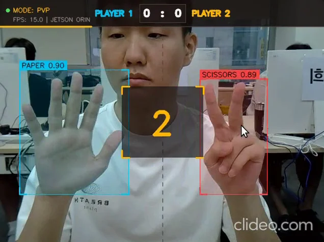
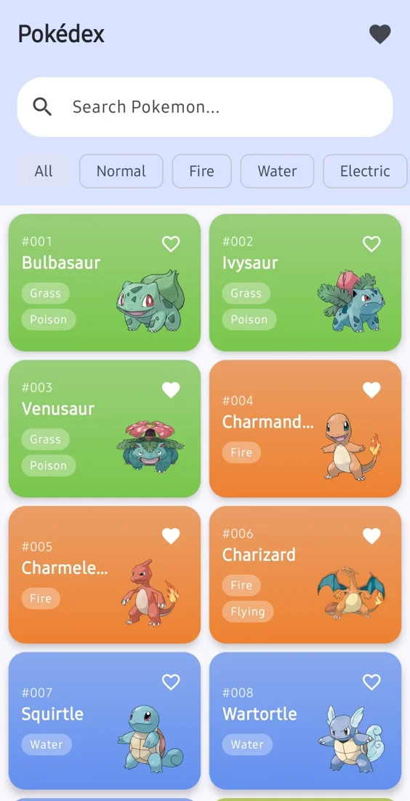

지아이티 GIT
SW개발1팀 · 연구원
2022.01 — 2024.02
차량 진단 애플리케이션 · 장비 통신
- Java/Kotlin 기반 Android 차량 진단 기능과 CAN·Ethernet 통신 모듈, 보안 제어기 데이터 위변조 검증 기능 개발
- 외부 센서·알고리즘을 연동한 소음 기반 진단 기능과 점검 결과 전송 기능 구현
- 국내·북미·유럽·중국 출시 및 브랜드별 빌드 대응. Hilt·Jetpack Compose 사내 세미나 진행
차량 진단과 센서 데이터 통신을 다룬 약 3년의 실무 경험.
MCU·Linux 제어 프로젝트로 장치에 대한 이해를 넓히고 있습니다.
김호철 임베디드 · 시스템 SW 개발자

Linux 응용 SW와 Android에서 장치의 데이터를 사용자 기능으로 연결했습니다.
SW개발1팀 · 연구원
2022.01 — 2024.02
영상보안개발팀 · 사원
2020.08 — 2021.08
MCU·Linux·Edge AI로 확장한 프로젝트입니다. 핵심 기능과 설계 판단, 직접 담당한 구현을 소개합니다.
Jetson Smart Fan Controller
본인 역할 · Kernel Driver, 제어 앱, 센서 IPC 및 검증 구현
정상 동작과 오류·종료 경로의 소프트웨어 회귀 검증 기록
Jetson Smart Fan Controller 상세 보기 →
Smart Recycling Edge AI
본인 역할 · 전체 SW 아키텍처·통신 통합, 추론 파이프라인·Qt·정산 구현
5개 서브시스템의 통합 시연과 최종 결과보고서 공개
Smart Recycling Edge AI 상세 보기 →
Smart Monitoring System
본인 역할 · STM32 펌웨어, Qt 관제 서버, Android 앱 구현·연동
자동 차단·모바일·현장 스위치·Qt 제어 통합 시연 공개
Smart Monitoring System 상세 보기 →
FPGA SPI Sensor Monitoring
본인 역할 · Master RTL 설계·검증, 보드 간 인터페이스 정의, Qt 모니터 구현
Master 테스트벤치 13개·QtTest 36건 통과, 센서 수신·오류 복구 실물 시연
FPGA SPI Sensor Monitoring 상세 보기 →FPGA 제어 논리, AVR 장치 제어, Jetson 영상 추론과 Android 앱으로 구현 경험을 확장했습니다.

Verilog · FSM · PWM · 테스트벤치
Basys3에서 시간 설정·도어 서보·모터 PWM·조작 잠금을 통합했습니다. 단일 클럭의 FSM과 동시 입력 우선순위를 설계하고, 16개 테스트벤치로 상태 전환·출력 경계 조건을 검증했습니다.
저장소 · 설계와 검증 ↗
C · I²C · 오실로스코프
DS1307 RTC·LCD·키패드를 연결해 시계와 정수 계산기를 통합했습니다. I²C 레지스터 제어와 재귀 하향 수식 파서를 구현하고, 오실로스코프로 SDA·SCL의 주소·데이터·ACK/NACK을 분석했습니다.
저장소 · 설계와 검증 ↗
C · 초음파 · Interrupt · PWM · Bluetooth
초음파 센서 3개의 거리로 회피 방향을 판단하고 Bluetooth로 수동 조종합니다. 센서 순차 구동·Echo 인터럽트 계측·모터 PWM을 연결하고, 두 FND에 주행 방향과 통계를 표시했습니다.
저장소 · 설계와 검증 ↗
Python · TensorRT · CUDA · OpenCV
YOLO11·TensorRT로 손 제스처를 인식해 2인·PC 대전을 구성했습니다. 추론 버퍼를 사전 할당·재사용하고, 10프레임 판정과 게임 FSM을 연결해 라운드·점수를 관리합니다.
저장소 · 설계와 검증 ↗
Kotlin · MVI · Room
Room·Paging 3·RemoteMediator로 로컬 캐시를 구성했습니다. MVI·Flow로 화면 상태를 관리하고, 저장된 데이터의 이름 검색·타입 필터·즐겨찾기를 구현했습니다.
저장소 · 설계와 검증 ↗Java · Kotlin · Linux · CAN · Ethernet · Bluetooth
지아이티 차량 진단 / 브이유텍 센서·중계기 실무
C · C++ · STM32 · AVR · ioctl · IPC
스마트 선풍기 / 모니터링 / AVR RTC·계산기·주행차
Qt · Python · TensorRT · FastAPI · Android
재활용 키오스크 / 모니터링 / 가위바위보 / PokeDex
Verilog · SPI · I²C · UART · 테스트벤치 · Vivado
FPGA SPI 센서 모니터링 / 전자레인지 제어 모형
대한상공회의소 서울인력개발원
2026.05.27 — 2026.12.16 · 교육 중
MCU·통신, Linux 시스템·드라이버, Qt, Edge AI, FPGA·Verilog 실습
장안대학교 인터넷정보통신과 · 3년제
2015.03 — 2021.02 · 졸업
학점 3.95 / 4.5
자격 · 어학
정보처리산업기사 · 네트워크관리사 2급 · JLPT N1